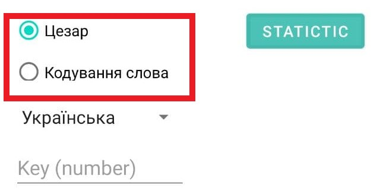
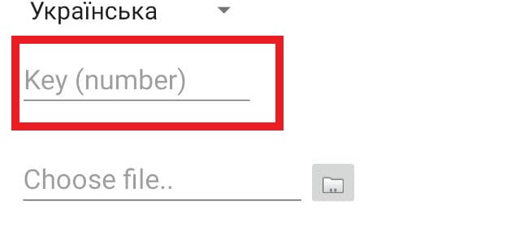
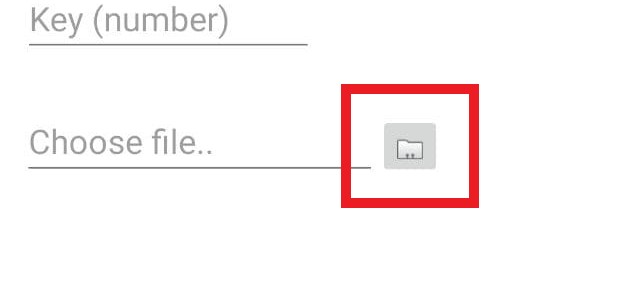
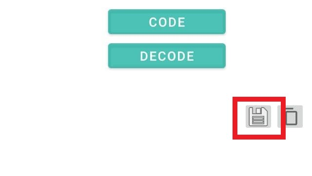
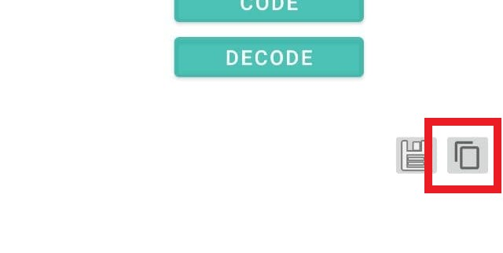
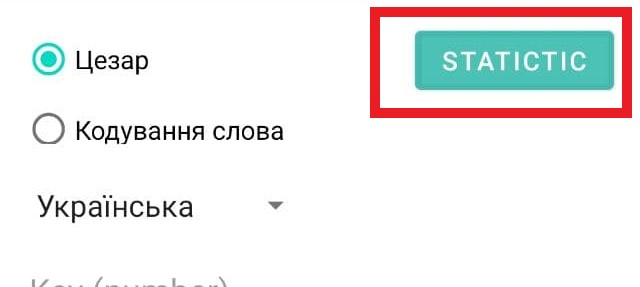

Cryptographer
Спочатку потрібно обрати спосіб шифрування повідомлення. Зауважте, спосіб повинен бути тільки один.
Далі ввести ключ. Це поле є обов'язковим. В залежності від методу, це може бути як число, так слово, тому слідкуйте за підказкою.
Додаток підтримує можливість завантаження файлів з мобільного пристрою для шифрування та дешифрування, а також збереження закодованого/розкодованого тексту. Для завантаження натисніть на клавішу:
Для збереження на мобільний пристрій натисніть:
Також додаток підтримує можливість копіювання закодованого/розкодованого тексту. Для цього натисніть на клавішу:
Для того, аби побачити статистику введеного тексту (відношення головних, приголосних звуків та символів), натисніть:
